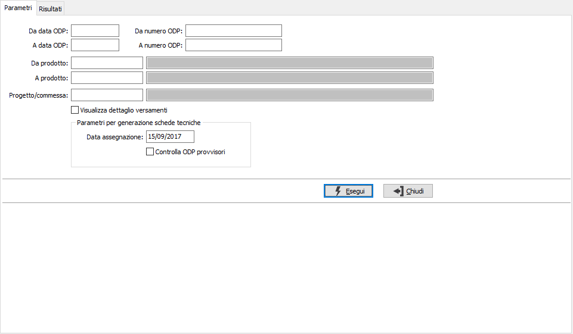
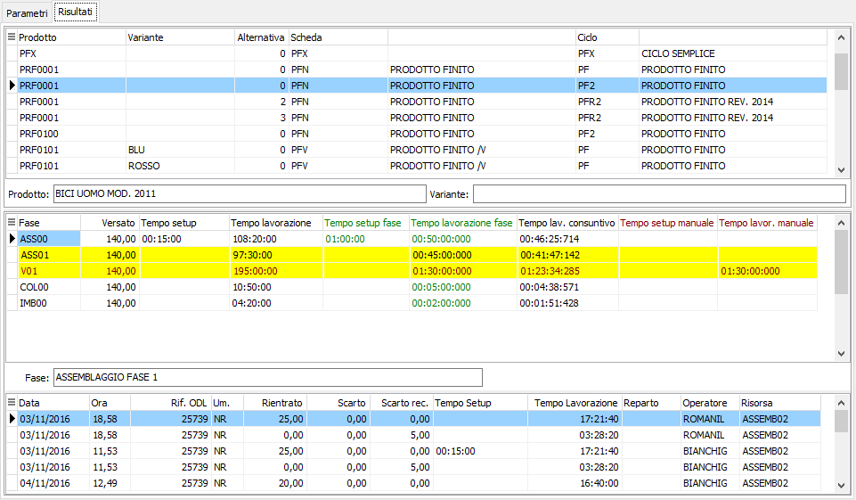
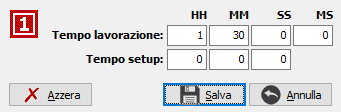
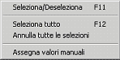

Analisi tempi di produzione
La procedura consente di analizzare ed eventualmente aggiornare i tempi preventivi di una scheda a partire dai tempi consuntivi registrati nei versamenti (creando una nuova scheda tecnica).
Vengono analizzati gli ODP chiusi, per i cui prodotti/varianti non siano presenti ODP (anche provvisori se spuntato l'apposito parametro) e non esistono associazioni a schede tecniche nel periodo comprendente la data di assegnazione inserita nei parametri.
Premendo il pulsante Esegui si avvia l'elaborazione che porterà alla pagina dei risultati.

Vengono mostrate, nella griglia di testa, raggruppate per prodotto/variante/alternativa le schede tecniche ed i relativi cicli di produzione; per ognuno di questi vengono mostrate, nella griglia sottostante, le fasi di lavorazione interne con i relativi tempi di fase (dal ciclo) ed i tempi consuntivi (dai versamenti); se richiesto nei parametri viene mostrata una ulteriore griglia con il dettaglio dei versamenti relativi alla fase su cui si è posizionati.



Dall'analisi è possibile selezionare le righe relative alle fasi di lavorazione (con doppio clic o menù contestuale) oppure inserire dei tempi manualmente (tramite clic sulle colonne relative o menù contestuale); la sola selezione della fase indica di assegnare al nuovo ciclo il tempo di lavorazione consuntivo calcolato, la selezione con inserimento manuale indica di assegnare i tempi indicati. Nell'inserimento manuale il pulsante Azzera consente di annullare l'inserimento fatto; le righe con dati inseriti manualmente sono riconoscibili per il colore bordò del testo.Da questa pagina è possibile effettuare la stampa utilizzando i tasti funzione della toolbar.
Se viene effettuato il salvataggio vengono duplicati i cicli di lavorazione per cui sono state selezionate le fasi, le relative schede tecniche e le associazioni ai prodotti utilizzando come data inizio validità la data fornita nei parametri.